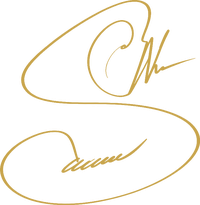

گروه فناوری MATEN. پروژههای دیجیتال را از پژوهش بازار تا توسعه و بهرهبرداری مدیریت میکنم. تمرکز من تبدیل فرآیندهای پراکنده به سیستمهای قابل تکرار است.
پروژههای دیجیتال را از پژوهش بازار و تحلیل نیازمندی تا توسعه و بهرهبرداری مدیریت میکنم.
تمرکز من روی تبدیل فرآیندهای پراکنده به سیستمهای قابل تکرار و توسعهپذیر است — از استراتژی محتوا تا پلتفرمهای سفارشی دیجیتال.
در حال حاضر بهعنوان مؤسس گروه فناوری ماتن روی پژوهش، مدیریت دانش، اتوماسیون فرآیندها و پروژههای دیجیتال فعالیت میکنم.
از تعریف مسئله و پژوهش بازار تا طراحی استراتژی، تولید محتوا و بهبود مستمر — با مالکیت فرآیند و هماهنگی تیم.
برای همکاری، مشاوره یا گفتگو، از راههای زیر در تماس باشید.
MATEN Technology Group. I manage digital projects from market research through development and adoption — turning scattered processes into repeatable systems.
I manage digital projects from market research and requirements analysis through development and adoption.
My focus is turning scattered processes into repeatable, scalable systems — from content strategy to custom digital platforms.
As founder of MATEN Technology Group, I work on research, knowledge management, process automation, and digital delivery.
From problem definition and market research to strategy, content production, and continuous improvement.
For collaboration, consulting, or a conversation.